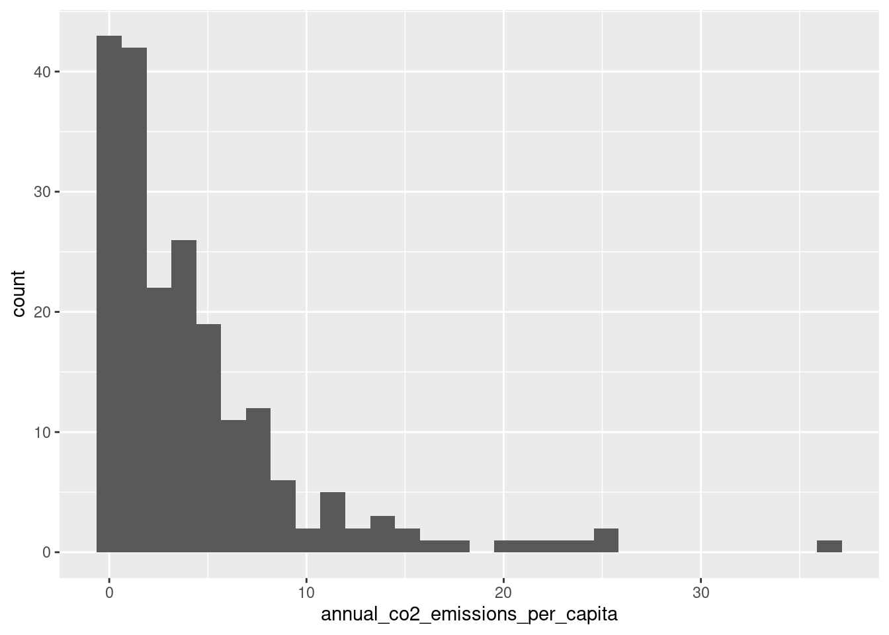
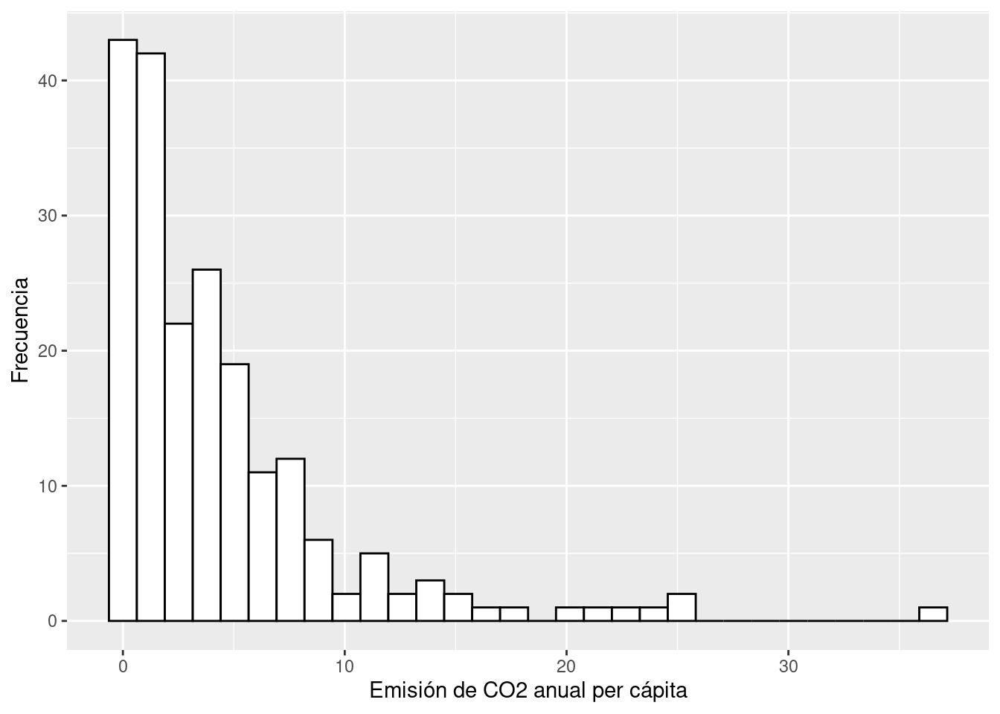
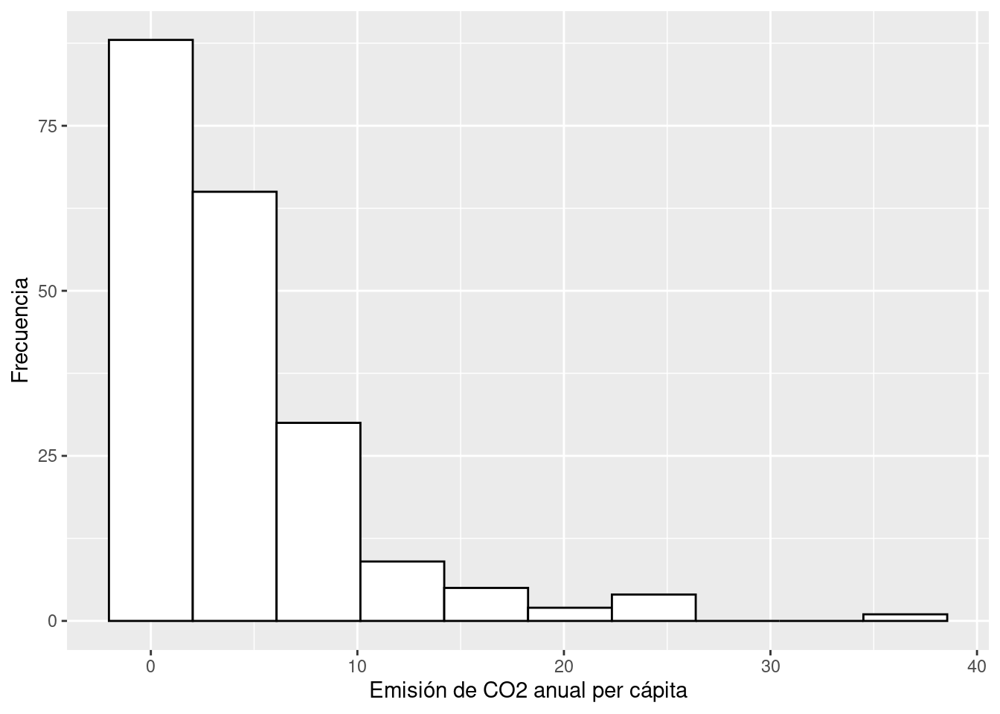
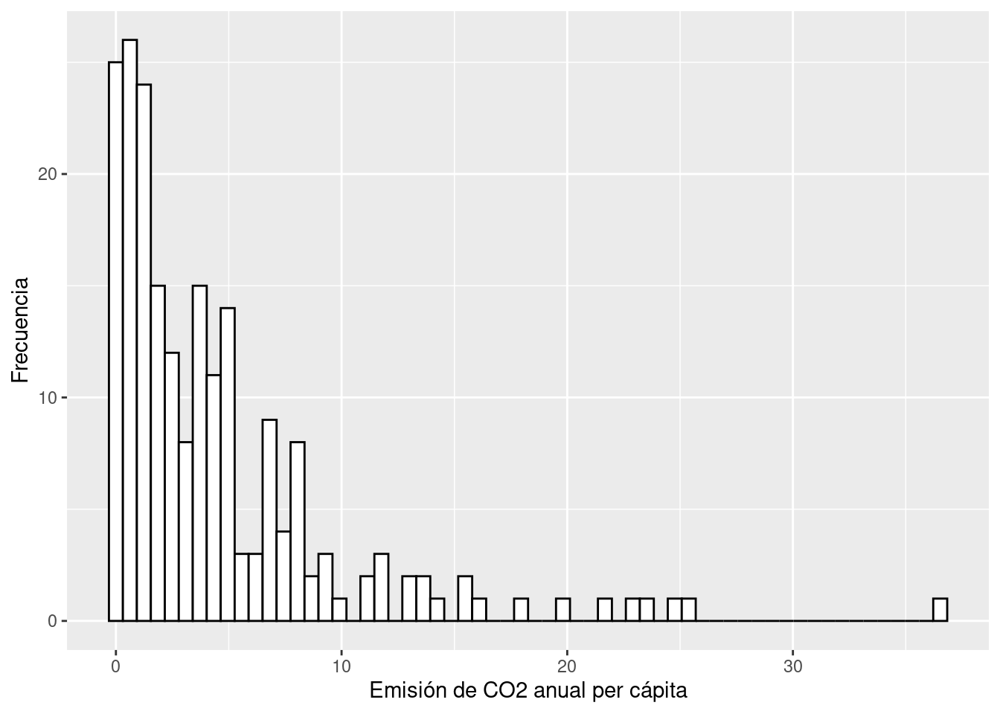
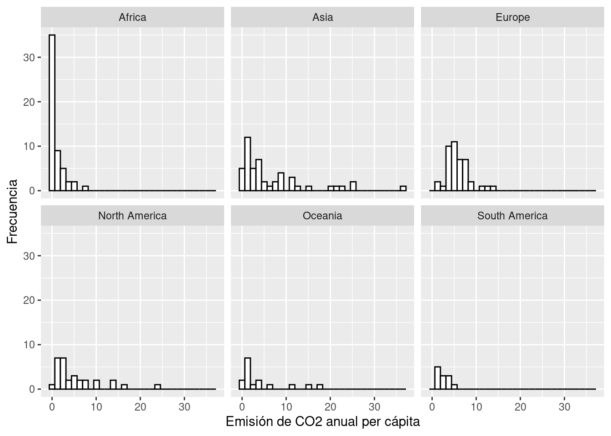
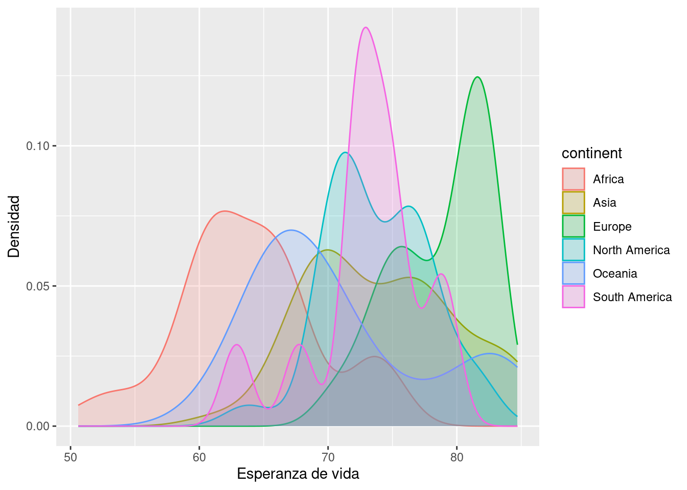
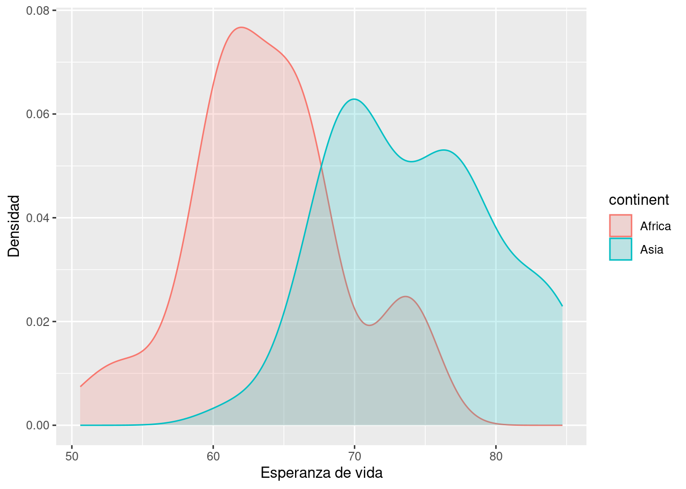

Algo muy fundamental al trabajar con una variable numérica es entender como se distribuye. Esto nos permite identificar varios aspectos importantes, como cuales son los valores máximos y mínimos que puede tomar, cuáles son los valores más comunes o qué tan homogéneos son los datos. Dos de las visualizaciones que nos permiten hacer esto son los histogramas y los gráficos de densidad.
Objetivos
Crear histogramas con ggplot
Crear gráficos de densidad con ggplot
Usar facet_wrap para generar páneles
Cargar librerías y datos
En este notebook vamos a usar ggplot2 para graficar (que viene con tidyverse) y usaremos los datos con información general de los países que hemos usado en notebooks anteriores.
library(tidyverse)
── Attaching core tidyverse packages ──────────────────────── tidyverse 2.0.0 ──
✔ dplyr 1.1.4 ✔ readr 2.1.5
✔ forcats 1.0.0 ✔ stringr 1.5.1
✔ ggplot2 3.5.2 ✔ tibble 3.3.0
✔ lubridate 1.9.4 ✔ tidyr 1.3.1
✔ purrr 1.1.0
── Conflicts ────────────────────────────────────────── tidyverse_conflicts() ──
✖ dplyr::filter() masks stats::filter()
✖ dplyr::lag() masks stats::lag()
ℹ Use the conflicted package (<http://conflicted.r-lib.org/>) to force all conflicts to become errors
datos <-read_csv("misc_world_data_2020.csv")
Rows: 204 Columns: 11
── Column specification ────────────────────────────────────────────────────────
Delimiter: ","
chr (4): country, code, continent, income
dbl (7): population, annual_co2_emissions_per_capita, waste_per_capita_tons_...
ℹ Use `spec()` to retrieve the full column specification for this data.
ℹ Specify the column types or set `show_col_types = FALSE` to quiet this message.
Los histogramas son gráficos que dividen a los valores de una variable numérica en grupos del mismo tamaño (bins) y luego cuenta cuantos valores caen en cada grupo que generamos y este conteo es el que graficamos.
Hagamos un histograma para ver cómo se distribuyen las emisiones de CO2 per cápita (annual_co2_emissions_per_capita). Para crear un histograma en ggplot solo debemos mapear la variable de interés a una posición x o y, y usamos geom_histogram(), la cual automáticamente hará los cálculos necesarios para construir el histograma:
`stat_bin()` using `bins = 30`. Pick better value with `binwidth`.

Antes de interpretar nuestra gráfica podemos enchularla un poco. Para que veamos claramente las barras podemos cambiar su color blanco y cambiar los nombres de los ejes.
ggplot(data = datos,mapping =aes(x = annual_co2_emissions_per_capita)) +geom_histogram(fill ="white", color ="black") +labs(x ="Emisión de CO2 anual per cápita",y ="Frecuencia" )
`stat_bin()` using `bins = 30`. Pick better value with `binwidth`.

Interpreta
¿Qué observas en la gráfica?
¿Cómo describes la distribución de esta variable?
A grandes rasgos podemos ver que la mayoría de los países tienen bajas emisiones anuales de CO2 per cápita y tenemos solo unos cuantos por arriba de 20. Esta es una distribución sesgada a la derecha.
geom_histogram() por defecto genera 30 grupos, muchas veces esto puede ser un valor acertado. Sin embargo, cuando generamos histogramas es importante explorar que pasa al cambiar el numero de grupos ya que eso puede revelar patrones distintos. Para controlar el número de grupos que se generan podemos usar el argumento bins de geom_histogram(), por ejemplo, podemos crear solo 10 grupos:
ggplot(data = datos,mapping =aes(x = annual_co2_emissions_per_capita)) +geom_histogram(fill ="white", color ="black", bins =10) +labs(x ="Emisión de CO2 anual per cápita",y ="Frecuencia" )

O podemos crear 60 grupos:
ggplot(data = datos,mapping =aes(x = annual_co2_emissions_per_capita)) +geom_histogram(fill ="white", color ="black", bins =60) +labs(x ="Emisión de CO2 anual per cápita",y ="Frecuencia" )

En este caso el patrón no cambia mucho, sin embargo, en otros casos puede ser determinante el elegir el número correcto de grupos. Ni muchos como para que ya no se agrupe nada, ni muy pocos como para que se oculten patrones en la distribución.
Generar páneles de gráficos usando una variable categórica
Algo que nos podría interesar es generar múltiples gráficas similares pero separando los datos por una variable categórica. Por ejemplo, algo que nos podría interesar es generar un histograma de la distribución de la emisión de CO2 para cada continente por separado. ggplot permite de manera muy fácil crear paneles de una mismo gráfico pero separándolo por una variable categórica usando la función facet_wrap(). La función facet_wrap() recibe como primer argumento el nombre de la variable que queremos usar como criterio para separar los datos. El nombre de la función debe de venir dentro de una función vars():
ggplot(data = datos,mapping =aes(x = annual_co2_emissions_per_capita), color = continents) +geom_histogram(fill ="white", color ="black", bins =30) +labs(x ="Emisión de CO2 anual per cápita",y ="Frecuencia" ) +facet_wrap(vars(continent))

Interpreta
¿Qué puedes observar?
¿En que continente están los países con mayores emisiones de CO2 per cápita?
¿En que continente están los países que generan menores emisiones de CO2 per cápita?
Gráfico de densidad
Otra forma de observar la distribución de una variable numérica es con un gráfico de densidad. Este es similar a un histograma, solamente que para este hacemos una línea suave que describe la distribución de probabilidad de nuestros datos. Para calcular la curva se realizan varios cálculos, sin embargo, obtenerla es muy fácil solo usando la función geom_density(). Por ejemplo, podemos crear una gráfico de densidad para ver cómo se distribuye la esperanza de vida (life_expectancy):
¿Cuál es la esperanza de vida máxima? ¿Cuál es la mínima?
¿Cuál es la esperanza de vida más común?
Algo que nos podría interesar es ver cómo se distribuye la esperanza de vida en cada continente. Para ello podemos crear un panel para para cada continente con facet_wrap():
¿Cómo difieren las distribuciones de la esperanza de vida en cada continente?
Otra forma como podríamos visualizar el gráfico de densidad de varios continentes es sobrelapandolos en un mismo gráfico. Para ello podemos maper el color de linea (color) y el color de relleno (fill) al continente, y darle un poco de opacidad usando el argumento alpha dentro de geom_density() para que se vean mejor los sobrelapes:
ggplot(data = datos,mapping =aes(x = life_expectancy, fill = continent, color = continent)) +geom_density(alpha =0.2) +labs(x ="Esperanza de vida",y ="Densidad" )

Como podrás notar este gráfico es dificil de leer cuando tenemos varias categorías, pero puede ser muy conveniente si queremos comparar solo 2 densidades. Por ejemplo, si quisiéramos comparar la distribución la esperanza de vida de África y Asia podemos filtar la tabla y hacer el mismo gráfico:
datos_africa_asia <-filter(datos, continent =="Africa"| continent =="Asia")ggplot(data = datos_africa_asia,mapping =aes(x = life_expectancy, fill = continent, color = continent)) +geom_density(alpha =0.2) +labs(x ="Esperanza de vida",y ="Densidad" )

Ejercicios
¿Cómo es la distribución de la producción per cápita de basura? Crea un histograma para ver su distribución
¿Cómo se distribuye la mortalidad infantil en cada continente? Crea un panel de histogramas o gráficos de densidad que muestre la mortalidad infantil en cada continente
Otra visualización similar al histograma es el polígono de frecuencias, el cual se puede crear en ggplot con la función geom_freqpoly(). Este funciona igual que el histograma, sólo que en lugar de usar barras utiliza una línea. Esta visualización puede ser útil para comparar distribuciones de distintas categorías en una sola gráfica. Crea una visualización que muestre la distribución de la producción de CO2 per cápita en cada continente, usa geom_freqpoly() para crear una sola gráfica donde el color de la línea esté mapeado a distintos continentes. Utiliza solo 10 grupos (bins).
---title: "15 - Histogramas y graficos de densidad"output: html_documenteditor_options: chunk_output_type: console---## IntroducciónAlgo muy fundamental al trabajar con una variable numérica es entender como se distribuye. Esto nos permite identificar varios aspectos importantes, como cuales son los valores máximos y mínimos que puede tomar, cuáles son los valores más comunes o qué tan homogéneos son los datos. Dos de las visualizaciones que nos permiten hacer esto son los histogramas y los gráficos de densidad.**Objetivos**- Crear histogramas con ggplot- Crear gráficos de densidad con ggplot- Usar `facet_wrap` para generar páneles## Cargar librerías y datosEn este notebook vamos a usar `ggplot2` para graficar (que viene con `tidyverse`) y usaremos los datos con información general de los países que hemos usado en notebooks anteriores.```{r}library(tidyverse)datos <-read_csv("misc_world_data_2020.csv")glimpse(datos)```## HistogramasLos histogramas son gráficos que dividen a los valores de una variable numérica en grupos del mismo tamaño (**bins**) y luego cuenta cuantos valores caen en cada grupo que generamos y este conteo es el que graficamos.Hagamos un histograma para ver cómo se distribuyen las emisiones de CO2 per cápita (`annual_co2_emissions_per_capita`). Para crear un histograma en ggplot solo debemos mapear la variable de interés a una posición `x` o `y`, y usamos `geom_histogram()`, la cual automáticamente hará los cálculos necesarios para construir el histograma:```{r}ggplot(data = datos,mapping =aes(x = annual_co2_emissions_per_capita)) +geom_histogram()```Antes de interpretar nuestra gráfica podemos enchularla un poco. Para que veamos claramente las barras podemos cambiar su color blanco y cambiar los nombres de los ejes. ```{r}ggplot(data = datos,mapping =aes(x = annual_co2_emissions_per_capita)) +geom_histogram(fill ="white", color ="black") +labs(x ="Emisión de CO2 anual per cápita",y ="Frecuencia" )```**Interpreta**- ¿Qué observas en la gráfica?- ¿Cómo describes la distribución de esta variable?A grandes rasgos podemos ver que la mayoría de los países tienen bajas emisiones anuales de CO2 *per cápita* y tenemos solo unos cuantos por arriba de 20. Esta es una distribución sesgada a la derecha.`geom_histogram()` por defecto genera 30 grupos, muchas veces esto puede ser un valor acertado. Sin embargo, cuando generamos histogramas es importante explorar que pasa al cambiar el numero de grupos ya que eso puede revelar patrones distintos. Para controlar el número de grupos que se generan podemos usar el argumento `bins` de `geom_histogram()`, por ejemplo, podemos crear solo 10 grupos:```{r}ggplot(data = datos,mapping =aes(x = annual_co2_emissions_per_capita)) +geom_histogram(fill ="white", color ="black", bins =10) +labs(x ="Emisión de CO2 anual per cápita",y ="Frecuencia" )```O podemos crear 60 grupos:```{r}ggplot(data = datos,mapping =aes(x = annual_co2_emissions_per_capita)) +geom_histogram(fill ="white", color ="black", bins =60) +labs(x ="Emisión de CO2 anual per cápita",y ="Frecuencia" )```En este caso el patrón no cambia mucho, sin embargo, en otros casos puede ser determinante el elegir el número correcto de grupos. Ni muchos como para que ya no se agrupe nada, ni muy pocos como para que se oculten patrones en la distribución.### Generar páneles de gráficos usando una variable categóricaAlgo que nos podría interesar es generar múltiples gráficas similares pero separando los datos por una variable categórica. Por ejemplo, algo que nos podría interesar es generar un histograma de la distribución de la emisión de CO2 para cada continente por separado. `ggplot` permite de manera muy fácil crear paneles de una mismo gráfico pero separándolo por una variable categórica usando la función `facet_wrap()`. La función `facet_wrap()` recibe como primer argumento el nombre de la variable que queremos usar como criterio para separar los datos. El nombre de la función debe de venir dentro de una función `vars()`:```{r}ggplot(data = datos,mapping =aes(x = annual_co2_emissions_per_capita), color = continents) +geom_histogram(fill ="white", color ="black", bins =30) +labs(x ="Emisión de CO2 anual per cápita",y ="Frecuencia" ) +facet_wrap(vars(continent))```**Interpreta**- ¿Qué puedes observar?- ¿En que continente están los países con mayores emisiones de CO2 per cápita?- ¿En que continente están los países que generan menores emisiones de CO2 per cápita?## Gráfico de densidad Otra forma de observar la distribución de una variable numérica es con un gráfico de densidad. Este es similar a un histograma, solamente que para este hacemos una línea suave que describe la *distribución de probabilidad* de nuestros datos. Para calcular la curva se realizan varios cálculos, sin embargo, obtenerla es muy fácil solo usando la función `geom_density()`. Por ejemplo, podemos crear una gráfico de densidad para ver cómo se distribuye la esperanza de vida (`life_expectancy`):```{r}ggplot(data = datos,mapping =aes(x = life_expectancy)) +geom_density() +labs(x ="Esperanza de vida",y ="Densidad" )```**Interpreta**- ¿Qué quiere decir este gráfico?- ¿Cuál es la esperanza de vida máxima? ¿Cuál es la mínima?- ¿Cuál es la esperanza de vida más común?Algo que nos podría interesar es ver cómo se distribuye la esperanza de vida en cada continente. Para ello podemos crear un panel para para cada continente con `facet_wrap()`:```{r}ggplot(data = datos,mapping =aes(x = life_expectancy)) +geom_density() +labs(x ="Esperanza de vida",y ="Densidad" ) +facet_wrap(vars(continent))```**Intepreta**- ¿Qué patrones observas en la gráfica?- ¿Cómo difieren las distribuciones de la esperanza de vida en cada continente?Otra forma como podríamos visualizar el gráfico de densidad de varios continentes es sobrelapandolos en un mismo gráfico. Para ello podemos maper el color de linea (`color`) y el color de relleno (`fill`) al continente, y darle un poco de opacidad usando el argumento `alpha` dentro de `geom_density()` para que se vean mejor los sobrelapes:```{r}ggplot(data = datos,mapping =aes(x = life_expectancy, fill = continent, color = continent)) +geom_density(alpha =0.2) +labs(x ="Esperanza de vida",y ="Densidad" )```Como podrás notar este gráfico es dificil de leer cuando tenemos varias categorías, pero puede ser muy conveniente si queremos comparar solo 2 densidades. Por ejemplo, si quisiéramos comparar la distribución la esperanza de vida de África y Asia podemos filtar la tabla y hacer el mismo gráfico:```{r}datos_africa_asia <-filter(datos, continent =="Africa"| continent =="Asia")ggplot(data = datos_africa_asia,mapping =aes(x = life_expectancy, fill = continent, color = continent)) +geom_density(alpha =0.2) +labs(x ="Esperanza de vida",y ="Densidad" )```## Ejercicios1. ¿Cómo es la distribución de la producción per cápita de basura? Crea un histograma para ver su distribución```{r}```2. ¿Cómo se distribuye la mortalidad infantil en cada continente? Crea un panel de histogramas o gráficos de densidad que muestre la mortalidad infantil en cada continente```{r}```3. Otra visualización similar al histograma es el **polígono de frecuencias**, el cual se puede crear en ggplot con la función `geom_freqpoly()`. Este funciona igual que el histograma, sólo que en lugar de usar barras utiliza una línea. Esta visualización puede ser útil para comparar distribuciones de distintas categorías en una sola gráfica. Crea una visualización que muestre la distribución de la producción de CO2 per cápita en cada continente, usa `geom_freqpoly()` para crear una sola gráfica donde el color de la línea esté mapeado a distintos continentes. Utiliza solo 10 grupos (`bins`).```{r}ggplot(data = datos,mapping =aes(x = annual_co2_emissions_per_capita, color = continent)) +geom_freqpoly(bins =10)```